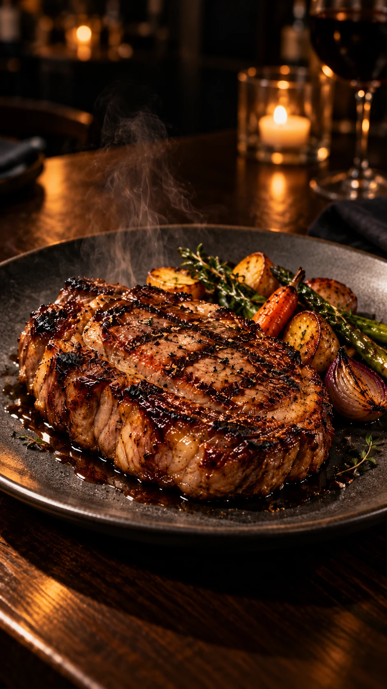
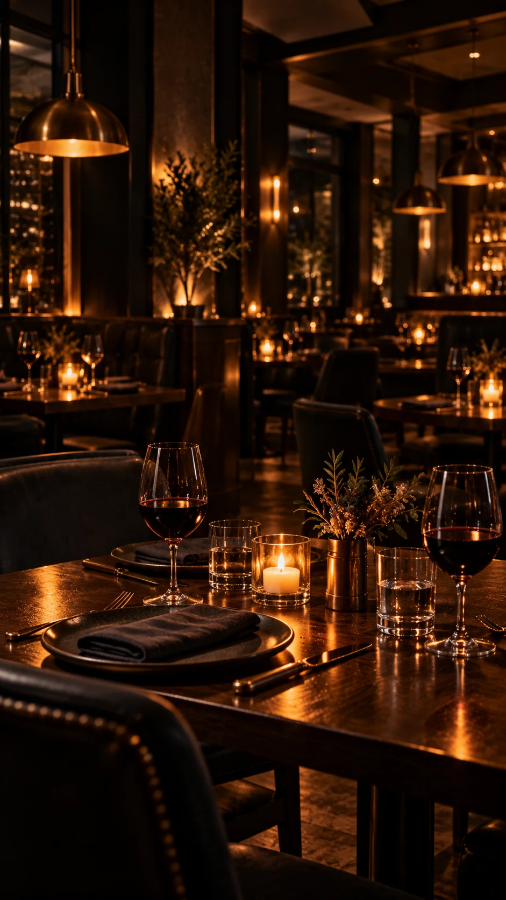
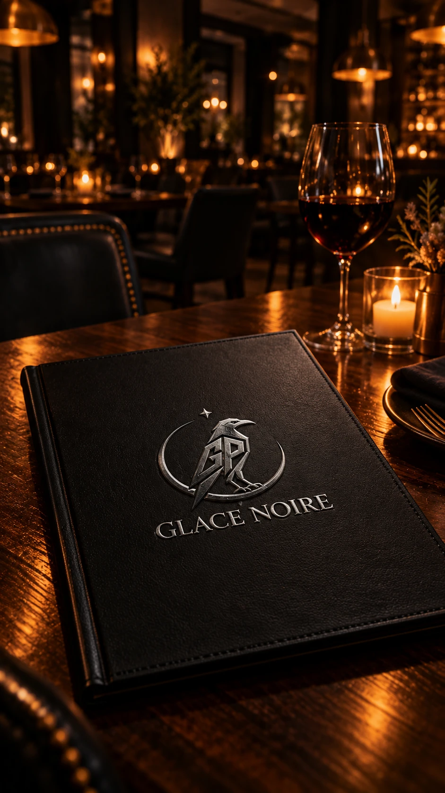

✦ FIRE BELOW. NIGHT ABOVE.
Fire.Flavour.After dark.
A table in the shadows. A little fire.
An evening worth lingering over.
A DIFFERENT KIND OF NIGHT
Into the fire.
Into the night.
The first flicker of a flame. The warmth of a room.
The pleasure of taking your time.
Welcome to the darker side of dining.
01 / AT THE TABLE
CONSIDERED. NEVER COMPLICATED.
A beautiful
respect for
the flame.
A deeply seared crust. A tender centre. Vegetables touched by heat. Good ingredients, given their moment. This is dining at its most elemental.

02 / IN GOOD COMPANY
Stay for
the atmosphere.
Candlelight on the table. Midnight in the room.
A place to disappear into the evening.
03 / THE MOTION PICTURE
An appetite
for the night.
From the first flame to the final signature.
Four moments. One Glace Noire evening.
04 / THE GLACE NOIRE SIGNATURE
A darker setting.
A lasting impression.
Black leather. A flash of silver. The glow of a candle.
The smallest details carry the whole evening.

Your table awaits.
The night is yours.
For the occasion. For the company. For the pleasure of it.